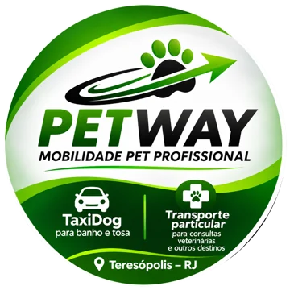

Chegando em Teresópolis
Transporte do seu pet com cuidado de verdade: para o banho e tosa, a clínica ou para onde ele precisar ir.
Pré-agendamentos a partir de 01/01/2027TaxiDogSeu cão vai e volta do banho e tosa, sem você precisar sair de casa.
Transporte particularVocê e seu pet juntos, para consultas e qualquer destino. Dia, noite e madrugada.